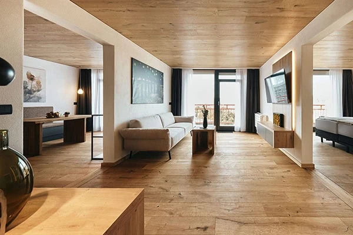
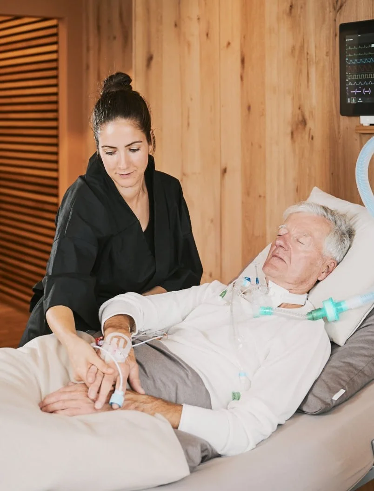
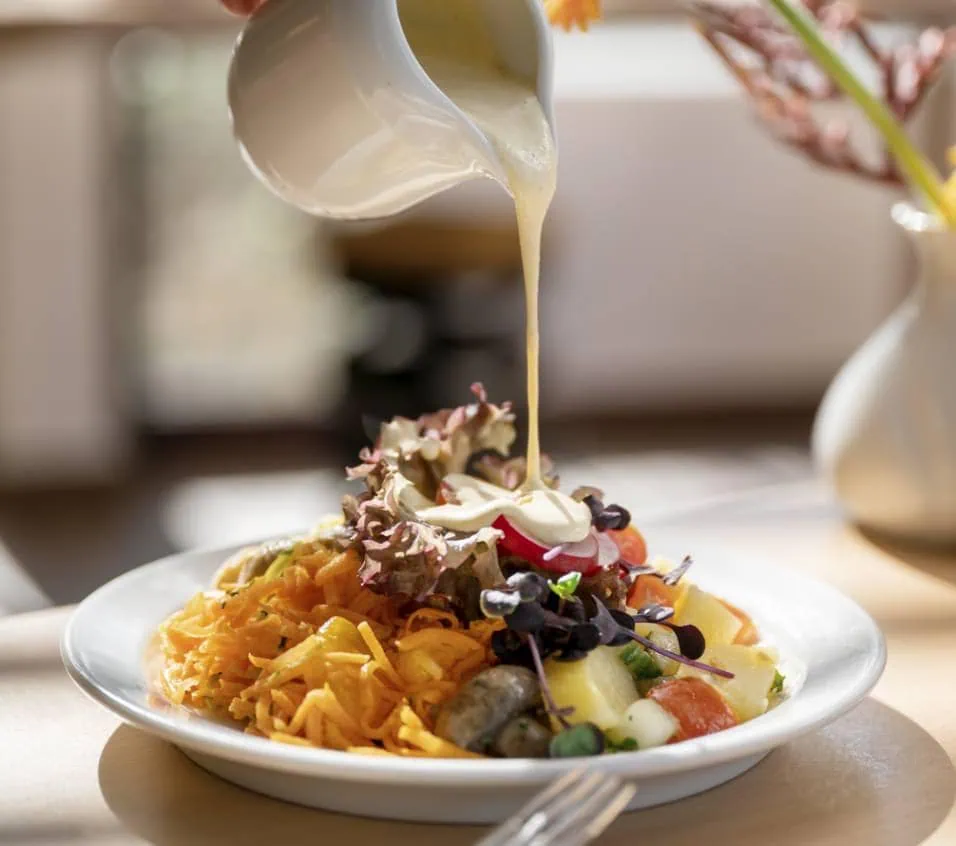

Geburtstag
Geburtstag
02
Margarete Brandl wird 74
Persönliche Karte + Anruf
Jede E-Mail, jeder Anruf, jedes Fax, jede Portal-Meldung — an einem Ort gebündelt, priorisiert und in Bewegung Richtung belegtes Bett.

41 Signale heute morgen — automatisch zusammengeführt, 14 wurden bereits zum Fall.

Geburtstag
Wiederbedarf Zuweiser-Rhythmus
Zuweiser-Rhythmus